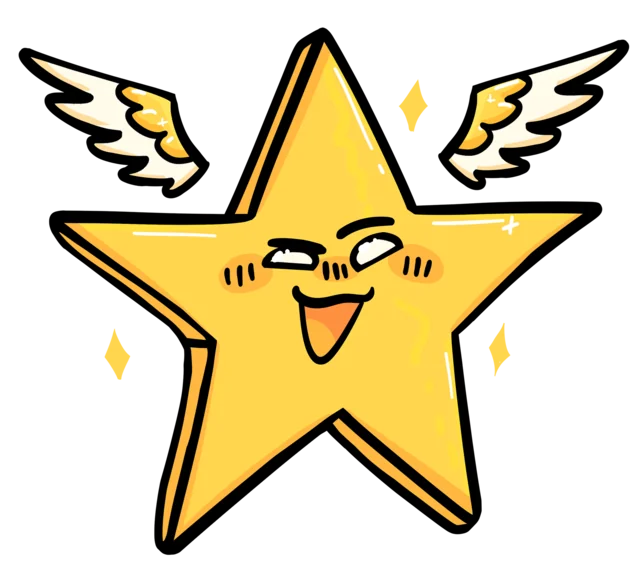

Ball is God?! Obróć wieżę. Stań się uderzeniem.
Hardkorowa arkada o pionowym zejściu, w której przeciąganie w poziomie obraca wieżę wokół spadającego Espa. Pomijaj bezpieczne lądowania, ładuj uderzenie combo i przebijaj się przez mityczny świat, gdzie jedno nieosłonięte trafienie kończy podejście.
Trwa aktywna produkcja: dziesięć scen lokacji, bossowie, rozgałęziające się dialogi i ścieżki karmy zmieniające zasady gry.
Obróćprzeciągnij wieżę wokół Espa
Ryzykopomiń trzy bezpieczne lądowania
Uderzenieprzebij się przez platformę
W bieżącej wersji
Karma zmienia więcej niż tylko dialogi.
Jasna, neutralna i ciemna ścieżka karmy zmieniają zachowanie tarczy, zapowiedzi ataków, agresję wrogów i fazy bossów, więc fabuła zmienia sposób gry.
Status wersji Aktywna produkcjaWszystkie dziesięć światów dialogowych
Tła dialogów dla wszystkich dziesięciu światów, w kolejności zejścia od Ena do Deka.


Bieżący interfejs produkcyjny
Wybór poziomu, dialogi i ekrany wyników w aktualnej wersji.
To obecny przebieg w kolejności, w jakiej go poznajesz: wybór poziomu, dialog, kluczowy wybór, a potem ekran zwycięstwa albo osobny ekran porażki. Każda grafika poniżej pochodzi z produkcyjnego projektu w Unity.
Niebiańska trasa wybiera wygenerowane poziomy w dziesięciu rozdziałach po 100 poziomów.
Menu produkcyjne odwzorowuje dziesięć lokacji w 100-poziomowych rozdziałach i uruchamia bezpośrednio wybrane podejście.

 201
201Dialog toczy się wewnątrz lokacji.
Portret postaci, grafika lokacji i tabliczka z imieniem mówiącego dzielą jedną pionową ramkę.


Shash
Kontynuuj więc, ale nie myśl, że będzie to łatwe. Tria Czekają na Ciebie, dzięki którym wszystko, co było wcześniej, będzie wydawać się drobnostką.
04 / Kluczowy wybór
Odpowiedź staje się częścią zejścia.
Na lokalnych poziomach 90 i 100 specjalny panel prosi o decyzję „oszczędź lub zabij”, zanim dialog rozstrzygnie podejście.

Oszczędź
Zabij
05 / Menu wyników
Zwycięstwo prowadzi dalej. Porażka cofa do tego samego wyzwania.
Obecna wersja ma dwa oddzielne stany wyników: PanelWin oferuje powtórkę i następny poziom, podczas gdy PanelOver zachowuje jedną, jednoznaczną akcję powtórki.
Zwycięstwo · PanelWin
Zejście zakończone
 Powtórka
Dalej
Powtórka
Dalej
Powtórka
Dalej
Postacie dialogowe
Twarze napotkane w drodze na dół.
Wszystkie 25 postaci z kompletnymi produkcyjnymi parami portretów (otwartych i zamkniętych) znajduje się poniżej. Najedź na kartę lub ją zaznacz, aby zmienić wyraz twarzy.





Przegląd gry
Ball is God?! to hardkorowa gra zręcznościowa o spadaniu przez obracającą się wieżę.
Pomysł
Prowadź Espa w dół boskiej wieży. Jeden błąd może zakończyć rozgrywkę, a twoje najważniejsze wybory zmieniają zasady świata.
Aktualna wersja
Zaimplementowano dziesięć scen lokacji, proceduralne generowanie wież, uderzenie combo, tarczę na gest przesunięcia, konfiguracje bossów, rozgałęziające się dialogi, menu produkcyjne i portrety ze zmiennym wyrazem twarzy.
Odbiorcy
Gracze, którzy lubią wymagające mobilne arkady, wyczucie czasu w stylu ryzyko-nagroda i bossów, a do tego historię, za którą warto podążać.
Status
Trwa aktywna produkcja. Ostatnie prace dotyczyły systemów działających w grze, grafiki światów, testów i tego, jak gra sprawdza się na telefonie.
Funkcje
Co robisz w Ball is God?!
Zejście z obrotem przez przeciąganie
Przeciąganie w poziomie obraca wieżę wokół automatycznie spadającego Espa, ustawiając w linii luki, zagrożenia i bezpieczne platformy.
Hardkorowa presja zręcznościowa
Jedno niezablokowane uderzenie kończy rozgrywkę, więc trzeba czytać wieżę i dobrze wyczuć czas każdego ruchu.
Bossowie i mityczne światy
Dziesięć scen lokacji, każda z własnymi bossami, niesie fabułę z jednego świata do następnego.
Wybory, które zmieniają zasady
Miłosierdzie, siła i karma zmieniają dialogi, zasady tarczy, agresję wrogów, zapowiedzi ataków i fazy bossów.
Pętla rozgrywki
Jak grać w Ball is God?!
- Krok 01Przeczytaj zejście
Obserwuj kolejne platformy, luki i zagrożenia i szukaj bezpiecznych momentów, gdy spadasz.
- Krok 02Obróć wieżę
Przeciąganie w poziomie obraca świat wokół Espa, ustawiając pod nim bezpieczną platformę lub celową lukę.
- Krok 03Ryzykuj i rozbijaj
Pomiń trzy platformy, aby naładować uderzenie combo, a potem przebij się przez konstrukcje, podczas gdy tarcza chroni przed jednym śmiertelnym błędem.
- Krok 04Wybierz konsekwencję
Miłosierdzie i siła kształtują karmę, dialogi oraz zasady rozgrywki wpływające na wrogów i bossów.
Historia / świat
Mityczna wieża, w której twoje wybory schodzą razem z tobą.
Ball is God?! zaczęło się od dziecięcej fascynacji mobilnymi grami zręcznościowymi o pionowym zejściu: odczytywaniem luk, szybkim reagowaniem i instynktownym przetrwaniem.
Ten format mógł unieść więcej: bossów, postacie z charakterem, fabułę i napięcie moralne. Obecny projekt prowadzi Espa przez dziesięć scen lokacji i grono dziwnych postaci, a wybory zmieniają zarówno fabułę, jak i rozgrywkę.
Celem stała się więc prosta arkada o pionowym zejściu, z presją walki z bossem i konsekwencjami jak w fabularnym RPG.
- Wizja
- Arkada z obracającą się wieżą i mityczną historią
- Aktualny zasięg świata
- Dziesięć lokalizacji i konfiguracji bossów
- Etap opowieści
- Kompletny szkic długiej historii
- Stan produkcyjny
- Aktywna produkcja
W skrócie
Proste sterowanie przeciąganiem i fabuła, która zmienia zasady.
Sterowanie przeciąganiem, które obraca wieżę, działa natychmiast. Resztę dają mityczne światy, bossowie i wybory zmieniające rozgrywkę.
Obecna wersja łączy już deterministyczne generowanie wieży, uderzenia oparte na ryzyku i nagrodzie, porażkę po jednym trafieniu, bossów, rozgałęziające się dialogi i karmę zmieniającą rozgrywkę.
- Gatunek
- Oparta na fabule arkada z pionowym zejściem
- Platforma docelowa
- iOS/Android
- Format sesji
- Szybkie rundy oparte na umiejętnościach
- Studio
- WillowinWorlds
Pobierz materiały
Ball is God?! - materiały dla prasy i twórców
Podglądy WebP do publikacji prasowych, oceny wydawców i odnośników na stronach sklepów. Pliki źródłowe w pełnej rozdzielczości są dostępne na prośbę.
Marka i postacie
Ikona gry oraz wszystkie 25 obecnych postaci, które mają kompletne produkcyjne portrety dialogowe. Nazwy odpowiadają kluczom lokalizacyjnym Unity.
EspaPortret postaci gracza.
RevlaPortret w dialogu produkcyjnym.
ShashPortret w dialogu produkcyjnym.
ShushPortret w dialogu produkcyjnym.
ShishPortret w dialogu produkcyjnym.
GigoPortret w dialogu produkcyjnym.
GogaPortret w dialogu produkcyjnym.
GigaPortret w dialogu produkcyjnym.
AskoldPortret w dialogu produkcyjnym.
MirasPortret w dialogu produkcyjnym.
HihPortret w dialogu produkcyjnym.
HehPortret w dialogu produkcyjnym.
HahPortret w dialogu produkcyjnym.
MusyaPortret w dialogu produkcyjnym.
DusyaPortret w dialogu produkcyjnym.
SusyaPortret w dialogu produkcyjnym.
VladusPortret w dialogu produkcyjnym.
FrishaPortret w dialogu produkcyjnym.
LurenPortret w dialogu produkcyjnym.
KurenPortret w dialogu produkcyjnym.
Don YagonPortret w dialogu produkcyjnym.
LuryaPortret w dialogu produkcyjnym.
KhleyaPortret w dialogu produkcyjnym.
VaronPortret w dialogu produkcyjnym.
WhitePortret w dialogu produkcyjnym.
Tła menu
Aktualna grafika produkcyjna używana przez niebiański system wyboru poziomów.
 Niebiańskie menu
Niebiańskie menu
Światy pionowego zejścia
Kompletny zestaw dziesięciu aktualnych teł lokacji, uporządkowanych od Ena do Deka.
 01 · Niebiański światTło pionowego zejścia Ena.
01 · Niebiański światTło pionowego zejścia Ena.
 02 · Kosmiczny światTło pionowego zejścia Dyo.
02 · Kosmiczny światTło pionowego zejścia Dyo.
 03 · Świat burzyTło pionowego zejścia Tria.
03 · Świat burzyTło pionowego zejścia Tria.
 04 · Śnieżny światTło pionowego zejścia Tessera.
04 · Śnieżny światTło pionowego zejścia Tessera.
 05 · Świat wulkanówTło Pente; w grze animowane.
05 · Świat wulkanówTło Pente; w grze animowane.
 06 · Świat oceanuTło pionowego zejścia Eksi.
06 · Świat oceanuTło pionowego zejścia Eksi.
 07 · Pustynny światTło pionowego zejścia Epta.
07 · Pustynny światTło pionowego zejścia Epta.
 08 · Leśny światTło pionowego zejścia Ohto.
08 · Leśny światTło pionowego zejścia Ohto.
 09 · Świat jaskińTło pionowego zejścia Ennea.
09 · Świat jaskińTło pionowego zejścia Ennea.
 10 · Piekielny światTło pionowego zejścia Deka.
10 · Piekielny światTło pionowego zejścia Deka.
Tła fabularnej arkady
Kompletny zestaw lokacji dialogowych: Sala Światła oraz tła dla wszystkich dziesięciu światów.
 00 · Sala ŚwiatłaTło dialogu otwierającego.
00 · Sala ŚwiatłaTło dialogu otwierającego.
 01 · Dialog niebiańskiTło historii Ena.
01 · Dialog niebiańskiTło historii Ena.
 02 · Dialog kosmicznyTło historii Dyo.
02 · Dialog kosmicznyTło historii Dyo.
 03 · Dialog burzowyTło historii Tria.
03 · Dialog burzowyTło historii Tria.
 04 · Dialog śnieżnyTło historii Tessera.
04 · Dialog śnieżnyTło historii Tessera.
 05 · Dialog wulkanicznyTło historii Pente.
05 · Dialog wulkanicznyTło historii Pente.
 06 · Dialog oceanicznyTło historii Eksi.
06 · Dialog oceanicznyTło historii Eksi.
 07 · Dialog pustynnyTło historii Epta.
07 · Dialog pustynnyTło historii Epta.
 08 · Dialog leśnyTło historii Ohto.
08 · Dialog leśnyTło historii Ohto.
 09 · Dialog jaskiniowyTło historii Ennea.
09 · Dialog jaskiniowyTło historii Ennea.
 10 · Dialog piekielnyTło historii Deka.
10 · Dialog piekielnyTło historii Deka.
Ball is God?! FAQ
Najczęstsze pytania o Ball is God?!
Jakim rodzajem gry jest Ball is God?!
Hardkorowa arkada o pionowym zejściu. Obracasz wieżę wokół spadającego Espa, pomijasz bezpieczne lądowania, by ładować uderzenia, i przebijasz się przez mityczne światy.
Jak grać w Ball is God?!
Przeciągnij w poziomie, aby obrócić wieżę, pomiń trzy platformy, aby naładować uderzenie, i przesuń w pionie, gdy tarcza z odnawianiem musi pochłonąć śmiertelne trafienie.
Czy Ball is God?! już wyszło?
Jeszcze nie. Gra jest w aktywnej produkcji: systemy w grze, grafika światów, treści fabularne i testy. Nie ma jeszcze publicznej daty premiery. Platformy docelowe to iOS i Android.
Czym wyróżnia się Ball is God?!
Łączy zręcznościową presję ryzyka i nagrody z dziesięcioma lokacjami i karmą, która zmienia dialogi, wrogów, zapowiedzi ataków, tarcze i bossów.
Kto robi Ball is God?!
WillowinWorlds, niezależne studio tworzące mobilne łamigłówki i gry zręcznościowe.
Czy mogę używać materiałów prasowych Ball is God?!
Tak, do publikacji prasowych, oceny wydawców i odnośników w sklepach. Pliki źródłowe pozostają prywatne, chyba że o nie poprosisz.
Ball is God?! Devlog
Co się zmieniło i kiedy
- Powierzchnie świata i walidacja zagrożeń
Prezentacja postaci, deterministyczne generowanie i zagrożenia w postaci cierni przeszły wspólny przegląd wizualny i walidację.
- lipiec 2026Dopracowanie interfejsu i postaci
Wybór poziomu, wspólne przyciski akcji, pionowe kadrowanie dialogów i sparowane wyrazy twarzy postaci są już gotowe.
- luty 2026Przegląd zakresu projektu
Zespół ukończył ważny etap integracji fabuły i przejrzał pełną skalę projektu: dziesięć światów, wybory moralne, bossowie i wiele zakończeń.
- kwiecień-maj 2025Przepisanie historii i umiejętności
Cała historia została napisana od nowa, poprawiono zdolności postaci, a konsekwencje moralne stały się wyraźniejsze.
- sierpień 2024Zaczyna się wytyczanie kierunku fabuły
Zespół uznał, że Ball is God?! powinno być czymś więcej niż prostą arkadą o zejściu, i dodał mityczną fabułę oraz wizję moralnych wyborów.
- lipiec 2024Oryginalna koncepcja
Projekt zaczął się jako pierwszy pomysł na grę w studiu: szybka pionowa gra zręcznościowa o spadaniu przez boską wieżę.
- Aktualna wersjaArkada i fabuła w jednej wersji
Zejście po obracającej się wieży, uderzenie combo, tarcza przeciągana palcem, bossowie, dialogi i karma działają teraz razem w jednej wersji.